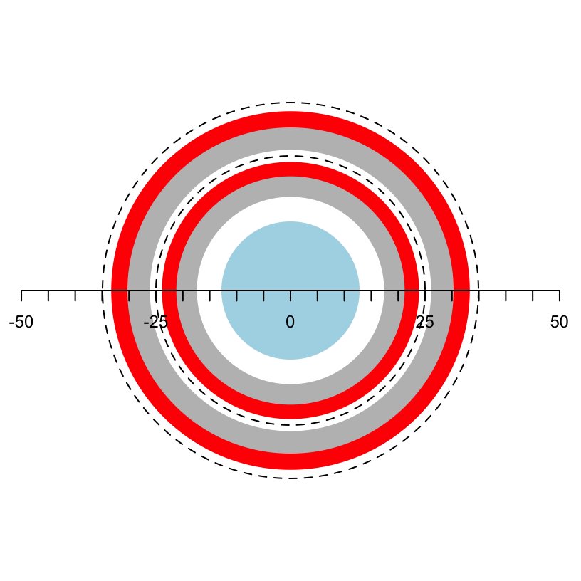
Building an EF-NMR Part 1
EF-NMR
DIY
The polarization coil
Readers may have noticed an Earth Field NMR theme in several recent posts (here, here and here). Behind the scenes, my interest in this topic was growing, fertilized in large part my desire to learn more about electronics. I may have lost my mind, but I have now embarked on a project to build an EF-NMR!
I was inspired by the really simple EF-NMR instrument developed by Andy Nichol (“Nuclear Magnetic Resonance for Everybody”). Nichol’s work made it clear that one could observe an NMR signal without complex equipment. As I did more reading however, I settled on following the build of Carl Michal (Michal (2010)) as it will allow for more complex experiments, and provides more opportunity to learn electronic circuits.
Michal’s design uses two coils: a polarization coil, and a transmit/receive (T/R) coil. This post will cover the construction of the polarization coil. Michal’s polarization coil is a three-layer solenoid constructed with 18 AWG magnet wire. Each layer is a separate wire but in operation, the three layers are wired in parallel. I scaled the coil dimensions down somewhat so that I could use materials that are readily accessible to me.1 The plan is to use a 50 mL centrifuge tube as the sample holder. The sample will be placed in a T/R coil wound around a 1.25” schedule 40 PVC pipe. The T/R coil will be located inside the polarization coil, which will be wound on a 2” schedule 40 PVC pipe. The dimensions of these pipes were chosen to allow the sample to nest easily inside the T/R coil which nests inside the polarization coil. Figure 1 shows a cross-section of the design.2
Constructing the Form
The form for the polarization coil was made from a 12 cm length of 2” PVC pipe. Two retaining rings were very carefully cut from a 2” PVC coupling. The retaining rings were 1 cm wide. The parts are shown in Figure 2. The rings were then glued to the ends of the form using a minimal amount of standard PVC glue. The inner edges of the rings correspond to the original end of the coupling which provides a clean and straight edge where it will rest against the magnet wire. The ends of the assembly were lightly sanded. As built, the length available for the windings is 102 mm.
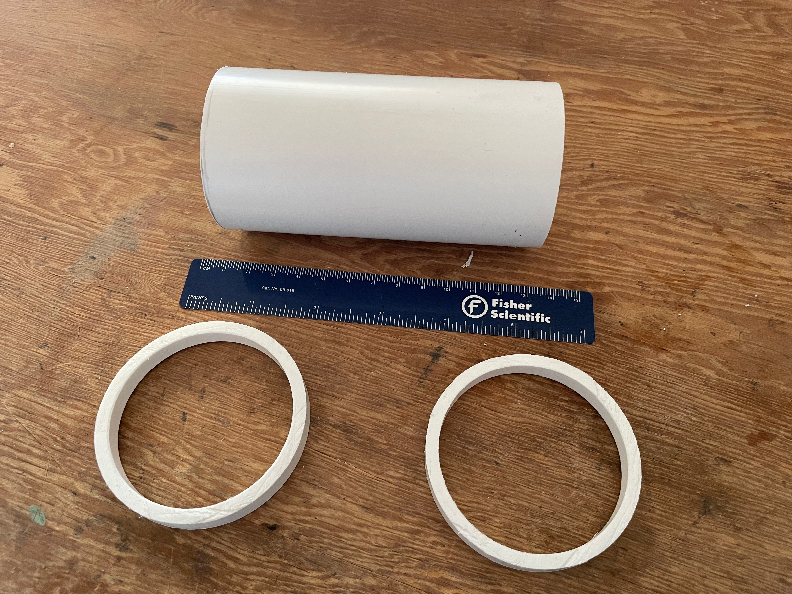
Next, three holes were drilled close to each of the retaining rings, about 1 cm apart. The magnet wire will pass through these holes, which will serve to keep the wire in place as it is wound. Figure 3 shows these holes. A short length of wire was placed in the holes as a “keeper” as the winding was carried out. This ensured that the winding for the first layer did not block the holes for the second and third layers of wire (Figure 4).
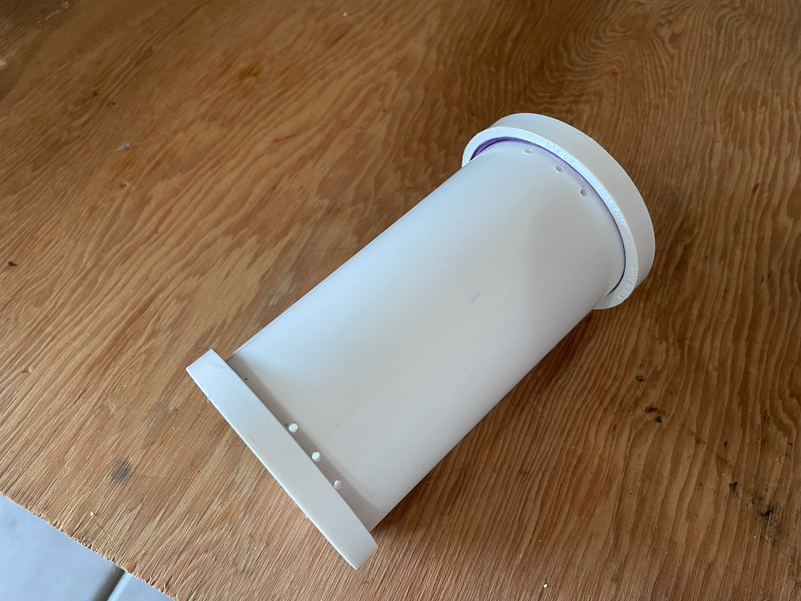
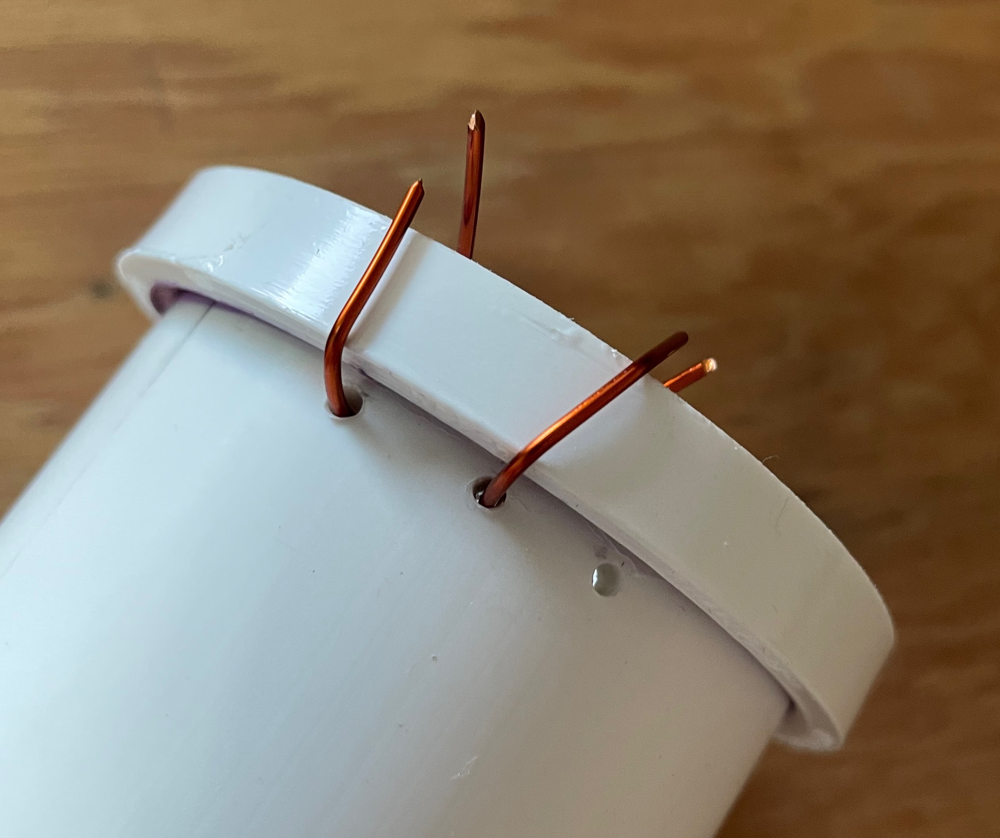
The Winding Jig
A winding jig was constructed from 1/4” hobby plywood. The base is 6 x 12”. Small nails and glue were used to assemble the sides and back. A 1/4” threaded rod serves as the rotational axis. Nuts and washers secure a simple handle as well as position the rod overall in the jig. Figure 5 and Figure 6 show the jig.
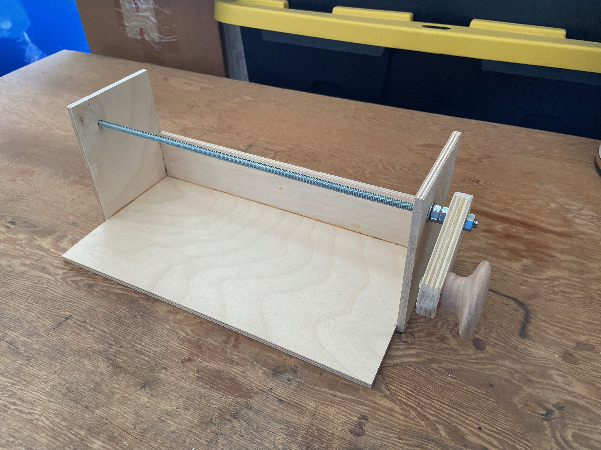
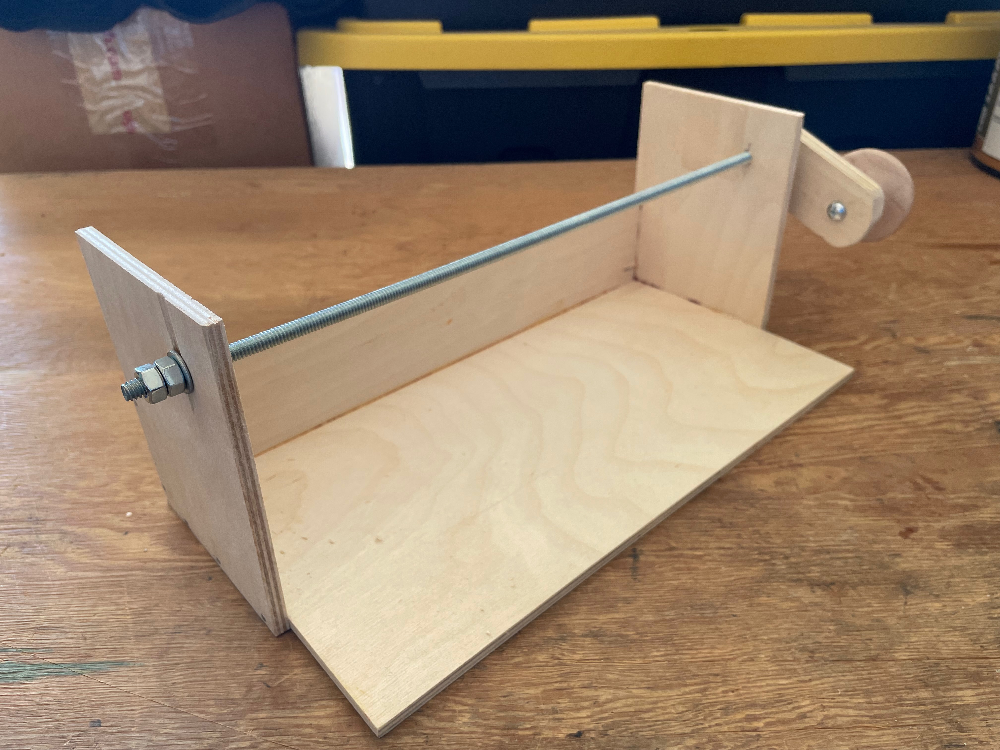
Wire Spool Holder
A holder for the wire spool was constructed with 1/16” x 1” aluminum bar. The bar was bent into a shape that would provide a way to apply friction to the sides of the spool, thus controlling the tension on the wire as it pays out. The spool is mounted on a 1/4” threaded rod and there are wingnuts on each side, which when tightened press the aluminum bar against the spool. The threaded rod does tend to unscrew as the wire is spooled out, but the process is slow enough that one can correct this as needed. If I were going to do this alot I would replace the wingnut on the side that tends to unwind with two nuts locked against each other. The holder is loosely attached to the work bench so that it can pivot as needed to accommodate the changing angle of the wire as it moves across the form. Figure 7 shows the design.
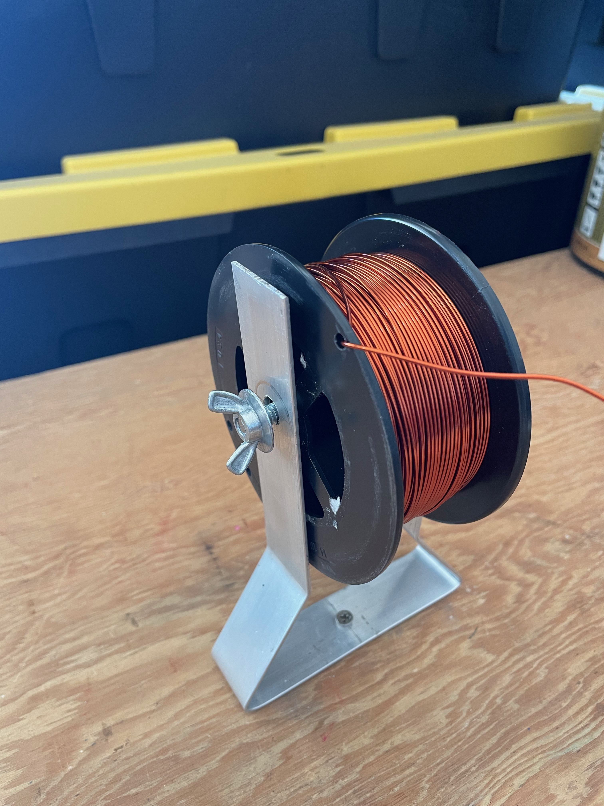
The Winding Process
The form was more or less centered on the threaded rod using a couple of wooden guide pieces. The winding process is shown in Figure 8. The wire for the first layer comes from inside the form and up through one of the holes and is wound on the form. The action of the keepers is apparent. The fingers are used to position the wire correctly. In principle tension on the wire is provided by tightening the wing nuts on the wire supply holder. However, I did not tighten them enough and I had to wrestle with getting layer one tight enough. This caused problems with the subsequent layers as you will see!
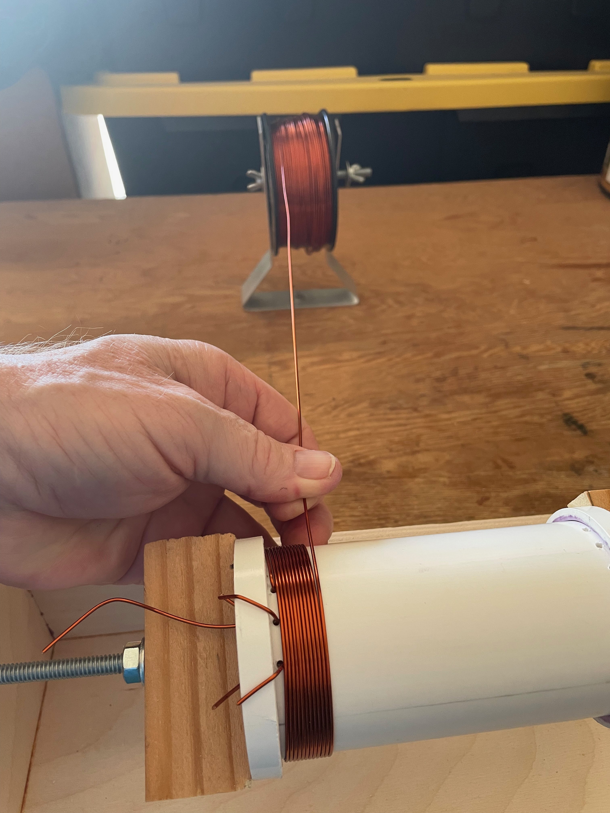
The completed layer one is shown in Figure 9. The winding looks even. Layer two is shown in Figure 10. Because layer one was a little loose, the wire for layer two would sometimes slip in-between the wires of layer one and force them apart. This was exacerbated because I was using more tension on the wire supply for layer two. Clearly the layer is not even. In addition, winding layer two was more difficult because without the white background one cannot see the progress very well.
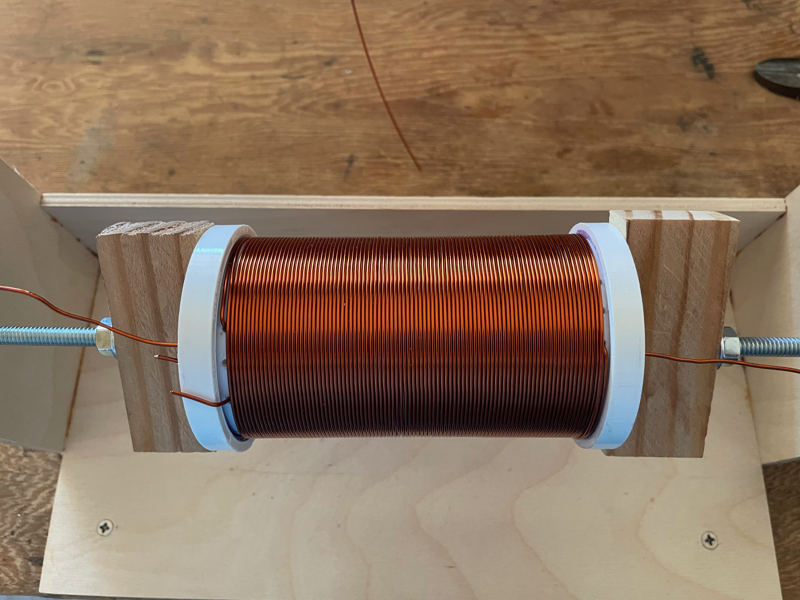
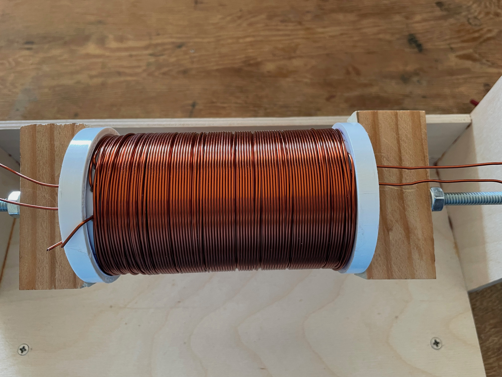
The problems only worsened with layer 3 (Figure 11). I am not happy with the final result, but the wire is positionally stable and it should carry out its function well enough. What I’ve learned here will help when winding the T/R coil.
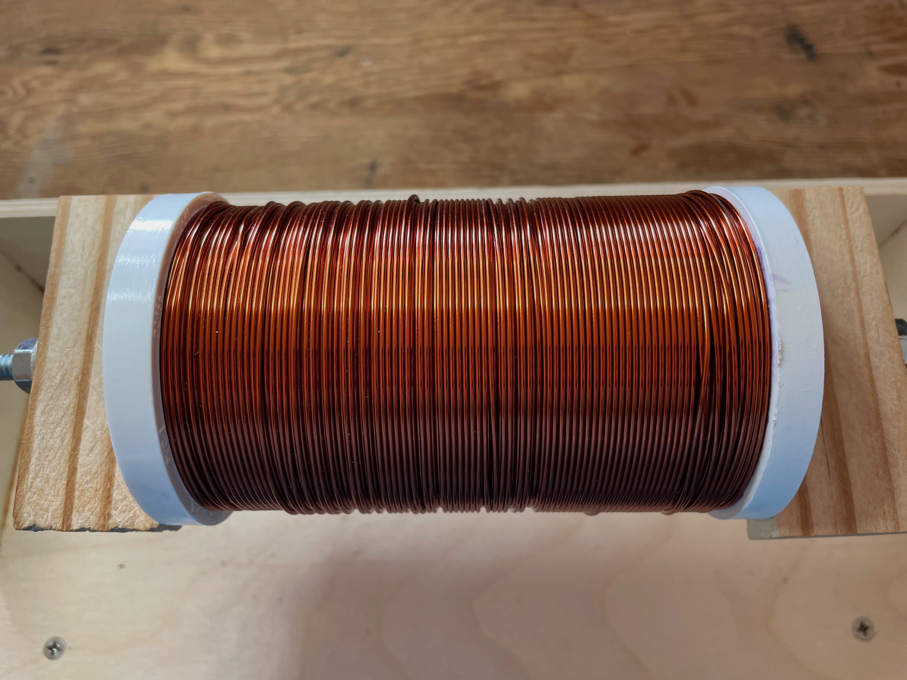
Checking Continuity
The polymeric insulation on the leads was sanded off (Figure 12) and the resistance of each coil was measured. Each gave a resistance of about 0.7 \(\ohm\) and there were no shorts between the layers.
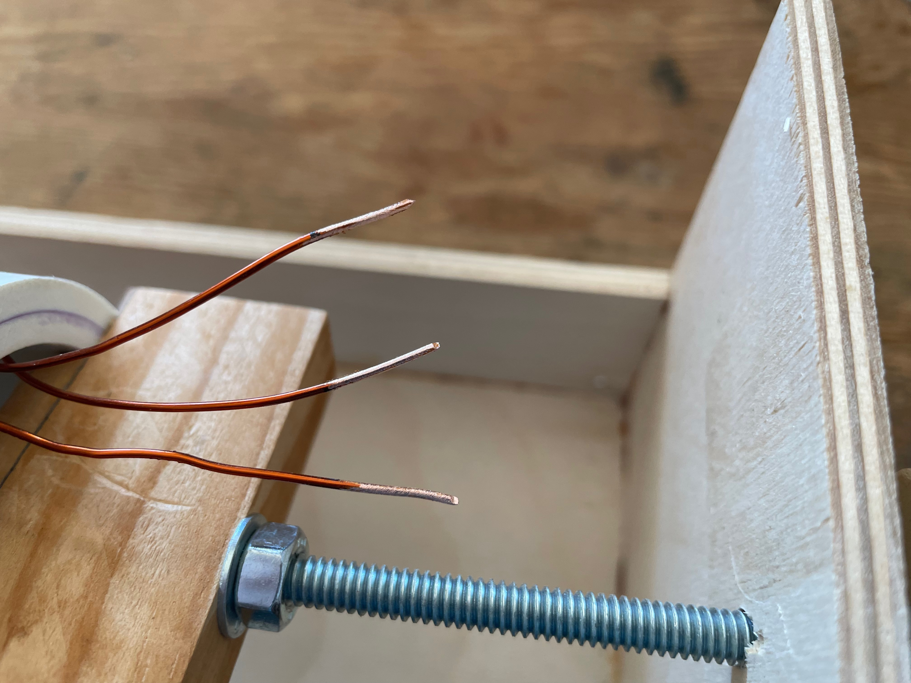
What’s Next
The next step will be the construction of the polarization coil power supply, and integration of the Arduino controller. I’m not in a hurry!
References
Michal, Carl T. 2010. “A Low-Cost Spectrometer for NMR Measurements in the Earth’s Magnetic Field.” Meas. Sci. Technol. 21. https://doi.org/10.1088/0957-0233/21/10/105902.
Footnotes
Reuse
Citation
BibTeX citation:
@online{hanson2023,
author = {Hanson, Bryan},
title = {Building an {EF-NMR} {Part} 1},
date = {2023-10-24},
url = {http://chemospec.org/posts/2023-10-24-EF-NMR-Build-1/EF-NMR-Build-1.html},
langid = {en}
}
For attribution, please cite this work as:
Hanson, Bryan. 2023. “Building an EF-NMR Part 1.” October
24, 2023. http://chemospec.org/posts/2023-10-24-EF-NMR-Build-1/EF-NMR-Build-1.html.